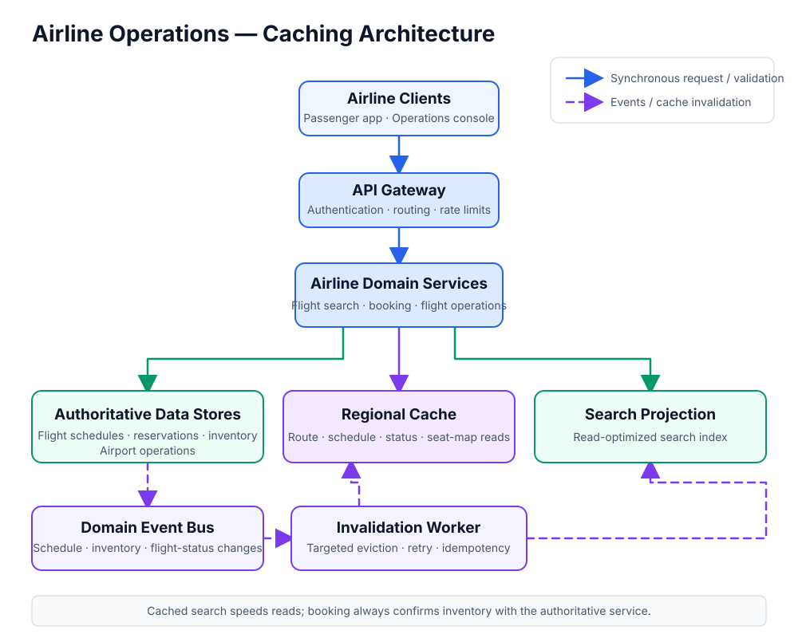

Systems Learning
Caching - Every Developer Must Know!
Caching stores reusable work closer to the consumer. It can improve latency and reduce cost, but it also introduces copies of data that must expire, invalidate or be reconciled.
A-Z of cache concepts
A - Availability
Cache failures should usually degrade to the source or a bounded fallback, not take down the application.
B - Buffer
Cache operations are read/write buffers for data or work; they are not automatically reliable storage.
C - Cache-aside
Application code reads the cache, then loads and stores missing entries from the source of truth.
D - Distributed cache
Shared cache nodes serve many application instances and require capacity, partitioning and network design.
E - Eviction
LRU, LFU or TTL policy removes entries when memory fills or values become no longer useful.
F - Fetch
Every miss triggers a fetch decision: load synchronously, fetch asynchronously or return stale data.
G - Granularity
Choose whether to cache an object, document, query result, rendered page or computed fragment.
H - Hit and miss
A hit is served from cache; a miss requires origin access. Track both hit ratio and miss latency.
I - Invalidation
Application events, source updates or explicit keys must remove or refresh stale cached values.
J - Jitter
Add random time around expiration to spread simultaneous misses and avoid a thundering herd.
K - Key design
Keys should be stable, namespaced, bounded and include every input that affects the cached value.
L - Local cache
In-process memory is fastest but has per-instance limits and may become inconsistent across deployments.
M - Memory sizing
Measure entry size, traffic, cardinality and eviction cost; cache capacity is a cost and reliability decision.
N - Negative cache
Temporarily cache a known miss to protect expensive lookups, while using a short TTL to limit bad results.
O - Origin
The database, service or rendering system is the source of truth that supplies cache misses.
P - Prewarming
Populate likely hot entries before traffic arrives, especially after deployment or cache restart.
Q - Query caching
Cache query results with invalidation tied to query parameters or source records, not merely response text.
R - Refresh-ahead
Refresh popular entries before expiration to keep hot reads fast and avoid origin spikes.
S - Staleness
Define acceptable age. Freshness, correctness and availability often require an explicit trade-off.
T - TTL
Time-to-live bounds retention. It protects against permanent staleness but does not guarantee instant updates.
U - Unavailability
Design cache-open failure, origin failure and partial-hit behavior before deploying traffic.
V - Versioning
Include schema or model versions in keys and payload metadata to prevent incompatible cached values.
W - Write-through
Write to cache and source together, trading write latency for stronger cache availability.
X - X factor
Test the cache's cross-load behavior: hot keys, cold starts, race conditions and regional traffic.
Y - Yield
Measure user-visible yield: latency saved, load removed and revenue or reliability gained per cache dollar.
Z - Zombie entries
Expired, orphaned or duplicate values can consume memory and produce surprising reads; remove and monitor them.
Common caching patterns
| Pattern | How it works | Best when | Main risk |
|---|---|---|---|
| Cache-aside | Application checks cache, loads misses and writes results back. | Read-heavy workloads with independent key access. | Race or stampede on miss. |
| Write-through | Write cache and data store in the write path. | Reads require recently written values. | Write latency and more complex failures. |
| Write-behind | Write cache first and persist asynchronously. | High-throughput, tolerant workloads. | Loss or reordering before durable storage. |
| Refresh-ahead | Proactively extend popular entries before expiry. | Stable hot keys and predictable demand. | Wasted refresh work for low-use data. |
| Read-through | Cache library or service loads misses transparently. | Common data-access abstraction. | Hidden latency and coupling. |
Cache consistency and invalidation
There are no universal “correct” consistency rules for caches. The required behavior depends on the domain. Flight display times may tolerate seconds or minutes, while seat inventory and payment state require tighter protections.
- TTL: use a bounded lifetime as the final safety net.
- Event invalidation: invalidate related keys after a database or domain event commits.
- Versioned keys: publish a new value under a new key instead of overwriting a hot key.
- Source validation: revalidate uncertain values by version, ETag or last-modified timestamp.
- Stale-if-error: serve limited stale data during origin outages only when business rules permit it.
Stampede prevention
A cache miss can become dangerous if thousands of requests try to rebuild the same key simultaneously. Prevent it with request coalescing, per-key locking, probabilistic refresh-ahead, jittered TTL and bounded retries. The database or upstream service must receive a controlled number of rebuild requests, not an amplification of all incoming traffic.
Case study: airline operations
Consider an airline operations platform serving flight search, booking, airport status, gate assignment and disruption management. The system receives high read volume while core operational updates are made by scheduling, airport, reservation and disruption teams.
1. Define cache boundaries
| Data | Cache strategy | Staleness policy |
|---|---|---|
| Route and airport catalog | Edge plus distributed cache | Hours; versioned during schedule release. |
| Flight schedule | Distributed cache with event invalidation | Seconds to minutes; revalidate changes immediately. |
| Seat map | Short TTL plus inventory events | Seconds; never use cache as final booking authority. |
| Seat price | Short TTL or no cache for checkout | Business-session freshness or direct origin validation. |
| Gate assignment | Operational real-time cache | Invalidated and acknowledged on assignment event. |
| Passenger-facing disruption notice | Cache with refresh-ahead | Fast propagation; explicit last-updated timestamp. |
2. Proposed architecture
Traveller or operation app → API gateway → service → regional cache → authoritative domain service/database
Update path:
Scheduling, reservation or airport service → domain event → cache invalidation worker → cache and search projection

A cache should sit close to the read API, but operational writes continue to pass through domain services and durable databases. For example, a booking request must reserve or verify inventory against the authoritative reservation system. Caching inventory alone could lead to double allocation or overselling.
3. High-demand flight search
Popular routes may receive huge search traffic after a price campaign or disruption. The search service caches normalized route queries for a short period, with separate keys by origin, destination, date, cabin and locale. A cache stampede is prevented through request coalescing and TTL jitter.
Because prices and seat availability change continuously, cached search results show a context label such as “prices updated moments ago” and the next booking step performs fresh validation. A user can shop from cached data, but purchase must be confirmed from source inventory.
4. Irregular operations
During a storm or airport closure, disruption events arrive from operations teams and external data sources. The platform can:
- Publish a versioned disruption event to the event stream.
- Invalidate affected flight and airport keys.
- Update projections and warm them for affected passengers.
- Push current status to passenger notification channels.
- Expose stale data only for a clearly defined read-only fallback.
If a regional cache is unavailable, flight status remains available from a replicated operational service, but search traffic is rate-limited to protect source systems. The safety-critical write path must remain independent of cache health.
5. Metrics and alarms
- Hit ratio by key type, region and endpoint.
- Miss latency and origin request fan-out.
- Cache and origin memory, CPU and saturation.
- Evictions, expired entries and hot-key concentration.
- Age of the newest and oldest operational data.
- Invalidation lag and event-delivery failures.
- Fallback usage and stale-data exposure.
Outcome
The case demonstrates the central caching principle: cache the work that is expensive and safe to reuse, not every part of the system. The correct strategy differs by data class, region and business risk.
Developer checklist
- Define the source of truth and cache ownership.
- Define permitted staleness and fallback behavior.
- Use bounded, namespaced and version-aware keys.
- Add TTL even when event invalidation exists.
- Prevent stampedes and hot-key amplification.
- Design cache-open and origin-unavailable paths.
- Never cache secrets or authorization decisions without strict isolation.
- Measure hit ratio, miss latency, origin load, staleness and cost together.
- Test cold starts, restarts, invalidation delays and partial failures.
- Document which operations remain source-authoritative.
Final takeaway
A good cache is an explicit architectural component, not a magical speed switch. It requires ownership, lifecycle rules, invalidation, observability and failure design. Used for the right data, caching makes systems faster and more resilient. Used indiscriminately, it creates stale answers and a second system that is difficult to operate.